UX CASE STUDY · 03
Sports Industry
Development
Multi-site UX Framework & Governance
10개의 공공 서비스를 하나의 UX 기준으로 연결하고, 여러 디자이너가 일관된 사용자 경험을 만들 수 있도록 공통 UX Framework와 UI Standard를 정의한 멀티사이트 리딩 사례입니다.
- ROLE
- UX Framework · Visual Direction · Common Guide · Design Review · Quality Assurance
대표홈페이지 메인 화면 · 공통 UI 패턴 · 접근성 · 모바일
위의 메인에서 사용자 편의성을 위해 다크모드와 글씨크기를 지원하기로 했고 버튼의 위치를 어디에 둘지를 고민한 흔적도 찾을 수 있습니다. 퀵 메뉴 링 역시 형태를 어떻게 할 지를 고민하다가 나중에 결정된게 현재 보라색 그라데이션 형태가 되었고, 모바일 구성도 위치, 형태를 테스트하여 결정이 되었습니다. 사이트를 가보면 확인하실 수 있습니다.
01 / POSITIONING
UI 디자인 프로젝트가 아니라,
공통 UX 기준을 리딩한 프로젝트
UX Framework
여러 사이트에 적용 가능한 UI Standard와 UX Framework를 정의하고, 각 서비스의 목적과 운영 특성을 고려해 일관된 사용자 경험을 만들기 위한 기준을 리딩했습니다.
- PROJECT TYPE
- Multi-site UX Framework
Unified UX Framework for Public Services
02 / PROBLEM
같은 기관이지만, 사이트마다 서로 다른 사용자 경험을 제공하고 있었습니다.
같은 기관의 서비스임에도 사이트마다 UI 기준, 내비게이션, 콘텐츠 구조, 화면 패턴이 달라 사용자가 하나의 브랜드 경험으로 인식하기 어려웠습니다.
사이트별 UI 기준 불일치
운영 기준 부재
공통 UI 규칙 부족
브랜드 경험 분산
유지보수 비효율
03 / DOMAIN UNDERSTANDING
프로젝트를 시작하기 전에,
기관과 서비스 구조를 먼저 이해했습니다.
스포츠 시설, 문화, 예약, 교육, 운영 등 여러 목적의 서비스가 하나의 기관 경험으로 연결되는 구조가 필요했습니다.
한국체육산업개발스포츠 시설문화예약교육운영
→
OUTPUTUnified
UX Direction
UX Direction
04 / CROSS-SITE UX STANDARD REVIEW
공통으로 유지해야 할 UX 요소와 서비스별 적용 기준을 정리했습니다.
10개 서비스의 대표 화면과 운영 목적을 기준으로 공통 UX 요소를 검토하고, 정보구조·내비게이션·레이아웃·UI 패턴의 기준을 정리했습니다.
NavigationHeaderLayoutTypographyColorFormCardTable
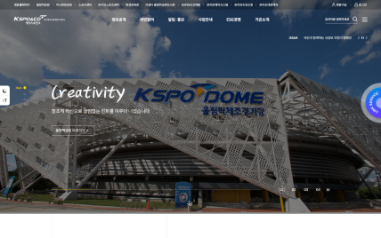
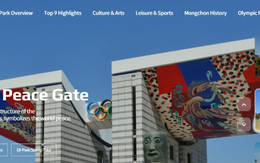
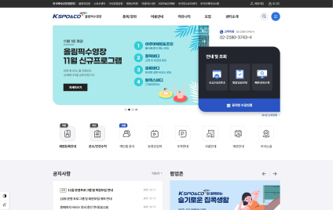
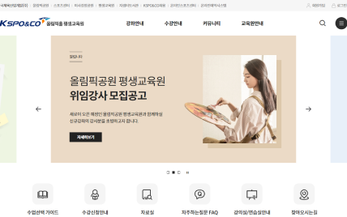
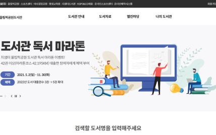
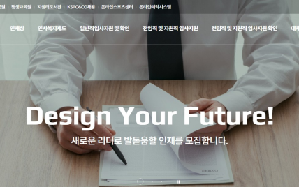
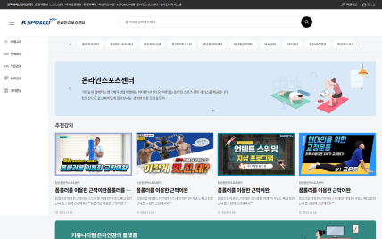
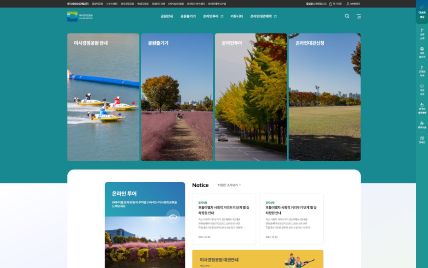
05 / REQUIREMENT STRUCTURING
사이트별 요구사항을
공통 UX 기준으로 재구성했습니다.
개별 요구사항을 그대로 옮기지 않고 공통 기능, 사이트별 예외, 운영 요구, 우선순위 기준으로 다시 구조화했습니다.
- 01Site
Requirement - 02Common
Requirement - 03Business
Requirement - 04Priority
기존 요구사항
공통 기능
사이트별 예외
우선순위
OUTPUT Shared UX Requirement
06 / UX FRAMEWORK
공통 UX Framework를 정의했습니다.
공통 UX 기준을 유지하면서 각 서비스의 목적과 브랜드 특성에 맞는 경험을 설계할 수 있도록 다섯 단계의 기준과 서비스 적용 구조를 정리했습니다.
01Foundation기본 원칙과 방향
02UI Standard공통 화면 규칙
03Common UI Elements반복 요소 기준
04Pattern과업별 조합 방식
05Page Templates대표 화면 구조
Multi-site Services
- 대표홈페이지
- 올림픽공원 국문
- 올림픽공원 영문
- 올림픽스포츠센터
- 평생교육원
- 지샘터올림픽공원도서관
- 채용홈페이지
- 온라인통합예약사이트
- 온라인스포츠센터
- 미사경정공원
07 / MULTI-SITE ARCHITECTURE
10개 서비스를 Corporate · Public Service · Admin 세 축으로 구조화했습니다.
기관 대표 경험, 대시민 서비스 경험, 운영 관리 경험으로 나누어 전체 서비스 관계를 정리했습니다.
Representative
Website
Olympic Park KoreanOlympic Park EnglishOlympic Sports CenterLifelong EducationLibraryRecruitmentReservationOnline Sports CenterMisa Racing Park
Integrated CMS
LMS
08 / DESIGN LEADERSHIP
여러 디자이너가
하나의 경험을 만들도록 리딩했습니다.
공통 UX 기준과 디자인 방향을 정의하고, 여러 사이트의 실행 품질이 흔들리지 않도록 디자인 리뷰와 QA 기준을 운영했습니다.
- 01Project
Design Lead - 02Common
UX Guide - 03Visual
Direction - 04Site Concept
Guide - 05Design
Review - 06Quality
Assurance - 07Site Designers
09 / UI STANDARD
여러 사이트에 적용 가능한
공통 UI 규칙을 정리했습니다.
각 사이트가 동일한 톤과 사용성을 유지할 수 있도록 반복 요소의 기준을 정리했습니다.
10 / GOVERNANCE
운영 기준과 디자인 리뷰 프로세스를 통해 일관성을 유지했습니다.
공통 UX 기준은 문서로 끝나는 것이 아니라 디자인 리뷰, 품질 검수, 화면별 적용 기준을 통해 실제 산출물에 반영되어야 했습니다.
11 / DESIGN DECISIONS
대표홈페이지는 직접 설계하고, 나머지 사이트는 공통 기준으로 정렬했습니다.
대표홈페이지는 기관 전체의 진입점이므로 직접 UX/UI 설계를 수행했습니다. 나머지 서비스 사이트는 각 담당 디자이너가 실행하되, 정보구조, 내비게이션, 공통 UI 가이드, 시각 방향, 디자인 리뷰 기준을 제공해 전체 경험이 하나의 기준 안에서 유지되도록 리딩했습니다.
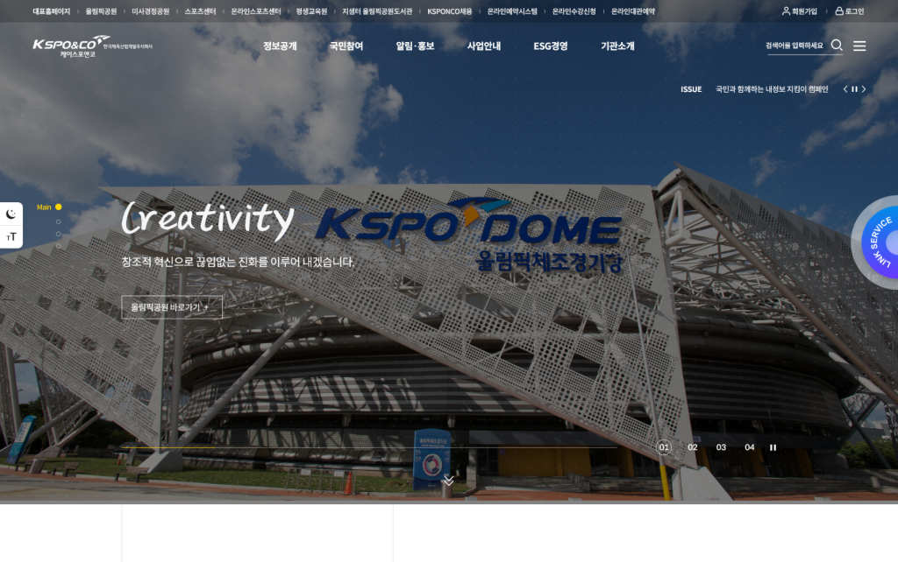
Representative Website — Direct Design
기관 전체를 대표하는 진입점이므로 공통 UX Framework와 UI Standard를 가장 엄격하게 적용해 직접 UX/UI를 설계했습니다.
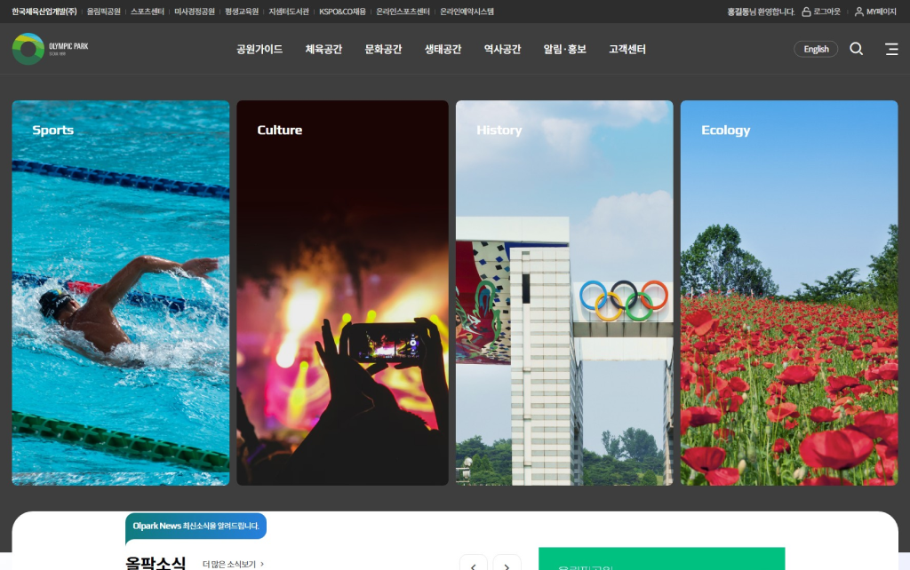
Olympic Park — IA & Navigation Standard
국문·영문 이용자를 함께 고려할 수 있도록 정보구조와 내비게이션 기준을 제시했습니다.
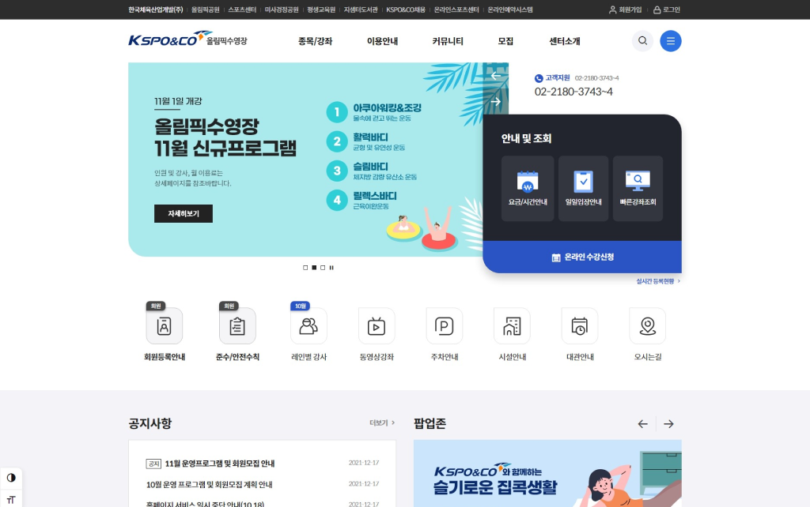
Sports Center — Common Pattern Guide
다수의 개별 센터 사이트가 같은 방식으로 읽히도록 공통 레이아웃, 카드, 목록, 상세 패턴 기준을 제공했습니다.
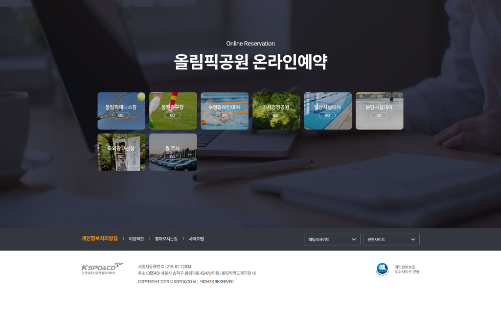
Reservation — Improvement Guideline
온라인통합예약은 기존 사용 맥락을 유지하면서 개선할 수 있도록 UI 개선 방향과 공통 사용성 기준을 제시했습니다.
12 / WHAT I ACTUALLY DID
My Role — Design Lead
대표홈페이지 UX/UI는 직접 설계하고, 나머지 사이트는 공통 UX 기준, 정보구조, 내비게이션, 공통 UI 가이드, 디자인 리뷰 기준을 제공해 여러 디자이너가 일관된 방향으로 작업할 수 있도록 리딩했습니다.
기관 대표홈페이지의 UX/UI를 직접 설계하고 공통 기준이 가장 잘 드러나는 기준 화면으로 정리했습니다.
10개 공공 서비스에 적용 가능한 공통 UX 방향과 화면 구조 기준을 정의했습니다.
사이트별 메뉴와 콘텐츠 구조가 일관되게 정리될 수 있도록 정보구조 기준을 제공했습니다.
사용자가 서비스 간 이동과 현재 위치를 이해할 수 있도록 내비게이션 기준을 제시했습니다.
Typography, Color, Button, Form, Card, Table, Popup 등 반복 UI 요소의 공통 가이드를 제공했습니다.
서비스별 성격은 유지하되 기관 전체의 브랜드 경험이 분산되지 않도록 시각 방향을 정리했습니다.
올림픽공원, 스포츠센터, 온라인통합예약 등 주요 사이트의 디자인 과정에 직접 참여해 공통 기준이 실제 화면에 반영되도록 확인했습니다.
각 사이트 담당 디자이너의 산출물을 공통 UX 기준에 맞춰 리뷰했습니다.
구현 전후 화면 품질과 기준 적용 여부를 확인했습니다.
13 / IMPACT
구조 변화의 흐름
정량 성과를 과장하지 않고, 실제 수행한 범위 안에서 구조적 변화를 정리합니다.
- 10 Public
Services - Unified UX
Framework - Shared Design
Standards - Cross-site Design
Alignment - Consistent
User Experience
Consistent User Experience
여러 공공 서비스를 하나의 기관 경험으로 인식할 수 있도록 공통 UX 기준을 마련했습니다.
Cross-site Design Alignment
여러 사이트의 정보구조와 화면 흐름을 하나의 기준으로 정렬해 서비스 간 이동 경험의 일관성을 높였습니다.
Shared Design Standards
PM, 디자이너, 개발자가 같은 기준으로 화면을 이해하고 리뷰할 수 있는 공통 언어를 만들었습니다.
14 / KEY LEARNINGS
무엇을 배웠는가
- 01
공통 UI는 디자인보다
운영 기준이다. - 02
멀티사이트는 사이트가 아니라
관계를 설계하는 일이다. - 03
여러 디자이너가 참여할수록
공통 UX 기준이 중요하다. - 04
사용자는 여러 서비스를
하나의 브랜드 경험으로 인식한다.
SPORTS INDUSTRY DEVELOPMENT
Multi-site UX
Framework Case Study
10개의 공공 서비스를 하나의 UX Framework 아래 연결하고,
공통 UX 기준과 디자인 방향을 리딩한 사례입니다.